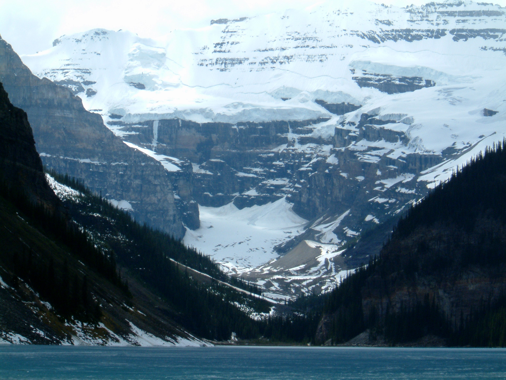
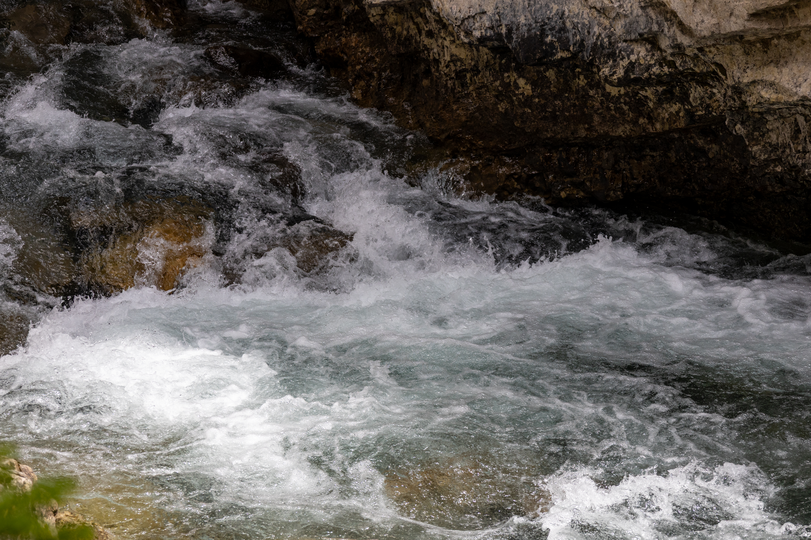
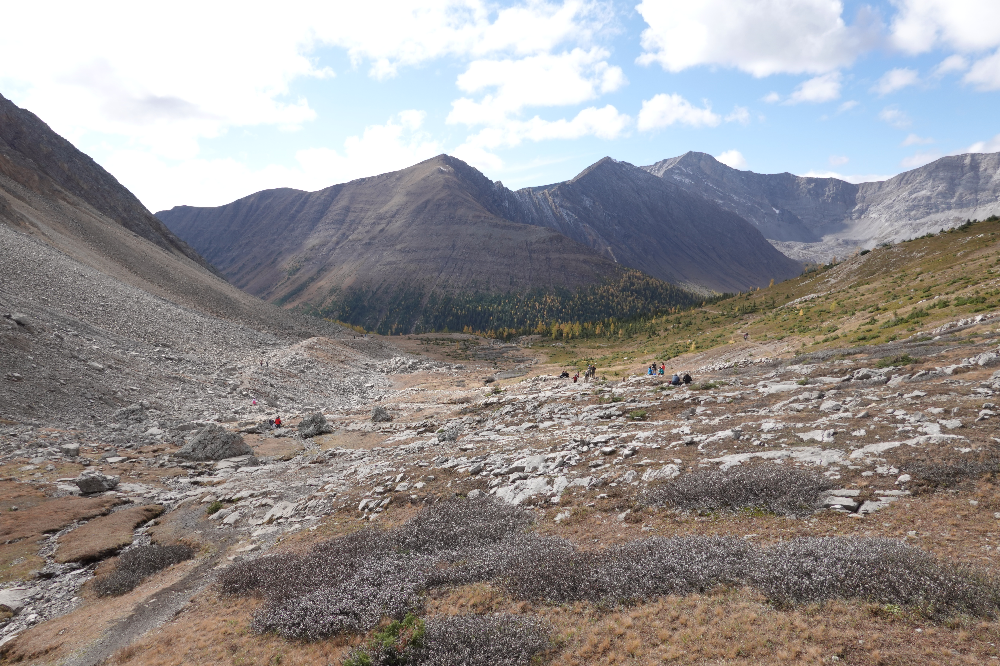

Lake Louise Lakeshore
A flat, family-friendly shoreline walk with postcard views of the Victoria Glacier. Go early to beat the crowds.
Loading trail weather…
Photo: Hedwig Storch, CC BY-SA 3.0
Prairie Pixel Studio presents
Hand-picked hiking trails across Alberta — from lakeside strolls to alpine summits.
Browse the trailsExplore Alberta Trails is a one-page field guide built by Prairie Pixel Studio, a small Calgary web agency. We scouted trailheads across the Rockies and the prairies so you can spend less time planning and more time hiking.
Every trail below includes distance, difficulty, and the season it shines in. Pick one, lace up, and go.

A flat, family-friendly shoreline walk with postcard views of the Victoria Glacier. Go early to beat the crowds.
Loading trail weather…
Photo: Hedwig Storch, CC BY-SA 3.0

Catwalks bolted to limestone walls lead you past waterfalls to the inkpots. Magical in winter when the falls freeze.
Loading trail weather…
Photo: Chris Woodrich, CC BY-SA 4.0

A short, steep punch into a high alpine bowl. In late summer the larches turn the cirque gold.
Loading trail weather…
Photo: Khoshhat, CC BY-SA 4.0
All three trails sit inside Banff National Park. The map below shows the Lake Louise area — zoom out to find Johnston Canyon and the Highwood Pass trailhead.
Map not loading? Open Lake Louise on Google Maps.
Privacy note: this map is provided by Google and only loads when you scroll to it. Loading it shares your visit with Google, as with any Google Maps embed.
Planning a trip or spotted a trail we missed? Send us a note.
Yes. All three trails sit inside national parks, so you'll need a valid Parks Canada pass displayed in your vehicle.
Dogs are welcome on leash on all three trails. Pack out everything you pack in, including pet waste.
The ten essentials: navigation, water, food, layers, headlamp, first aid, fire starter, knife, sun protection, and emergency shelter.
Coverage is patchy once you leave the trailhead. Download offline maps before you go and tell someone your plan.